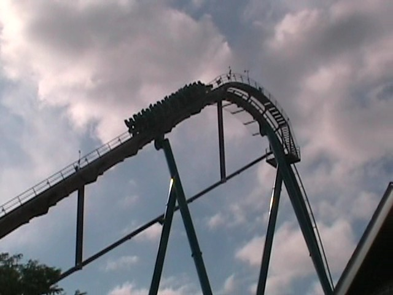
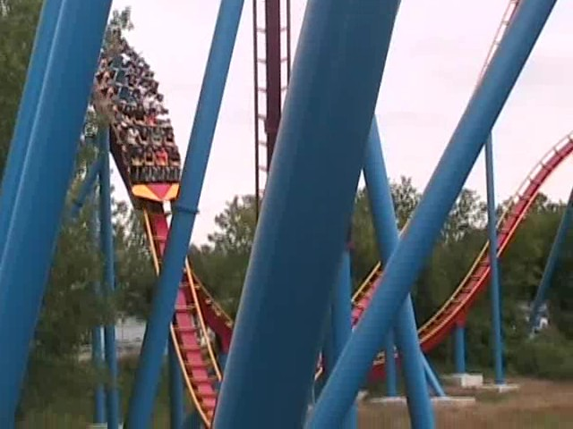

| |
Goliath Review

We're here at La Ronde. Today's ride we'll be reviewing for you is Goliath. This is the star attraction of La Ronde and the real reason for dealing with the horrednously sh*tty operations. You get in the car and pull down the clamshell lap bar. Now clamshells are awesome as you have a lot of freedom. But trust me. They keep you in. You then begin to climb the lifthill. Higher and Higher you go. If you look around, you get a fantastic view of the St. Lawrence River, Montreal, and the hills you are about to go through on Goliath. Then you just fly down the first drop. I don't know about the front, but in the back, you get some really good airtime in the back. Your ass is just out of the seat as you dive straight towards the ground. After gaining a lot of speed and bottoming out, we soar up into Airtime Hill #1. While going over the hill, we realize that the airtime isn't quite as strong as we had hoped it would be, but it's still pretty decent floater air. Now we drop back down and go straight into Airtime Hill #2. You still get some good floater air, but yeah. It's floater air. Not quite my cup of tea. I totally prefer powerful insane ejector air over this floater air. We then head into the twisty turnaround. We rise and twist to the right, once we level out, we then turn left into a turnaround before twisting back down right again. This is one of the best parts of the ride as the twisty stuff is cool, you get a good view of Montreal, and it's fun. Then we head into airtime hill #3. It starts out like all the others, but before we crest the hill, we come across some nasty trims. Back in 2008, this killed all the floater air. Luckily, these trims seem to have weakened as Airtime Hills 3, 4 & 5 all have the same floaty floater air that is all throughout this ride. Up next is a swoopy S Curve airtime hill. While there's no airtime, it's still fun due to it's swoopy nature. Then there's this the hill that's banked at 90 degrees and turns you at 90 degrees. It's really cool and one of the few unique things on the ride. Then you rise up and dip down, giving you a pop of ejector air that catches you off guard as you hit the brake run. In fact, that's my favorite part of the ride right there. It's really small, but its strong and even gets you to lean foreword a little. While it's not one of the best rides ever, it's a really fun ride, and without a doubt, the star attraction of La Ronde. I'd definetly recommend you ride this if you are at La Ronde. Just remember that there's a better B&M Hyper at a MUCH better Canadian Park one province away.
8/10
Location: La Ronde
Opened: 2006
Built by: B&M
Last Ridden: August 2, 2011
Goliath Photos






Home
|